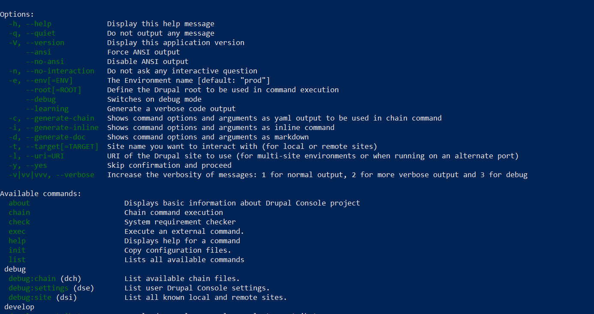

What is the Drupal Console?
Drupal Console is a new Command Line Interface (CLI) for Drupal, built specifically for Drupal 8 (based on the Symfony Console component). In many ways, the Drupal Console is similar to Drush. You can use it to rebuild caches, connect to databases and install modules. The Drupal Console is a suite of tools that you run on a command line interface (CLI) to generate boilerplate code and interact with a Drupal 8 installation. This saves you a lot of time - giving you more time to focus on the business logic of your module.
For installation please refer here. or you can follow the steps
composer require drupal/console:~1.0 \
--prefer-dist \
--optimize-autoloader \
--sort-packages \
--no-update
composer update
Once you have done with installation type drupal in terminal and you’ll get below list
To get all commands and option for console type drupal list & you will get list of options and available commands.
I will show you how can we create boilerplate code “Generating Custom Module”
To create custom form we first need to have custom module
We will create module called example
All we need is to run generate:module command first.
$ drupal generate:module You should then see the example folder in your site under /modules/custom
Next Blog will add Controller , forms in this module